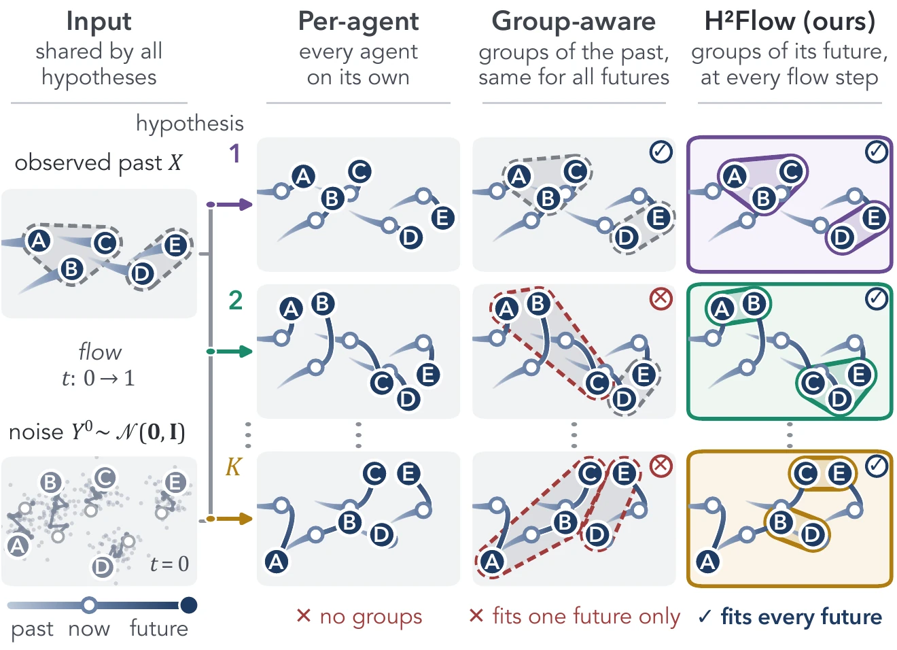
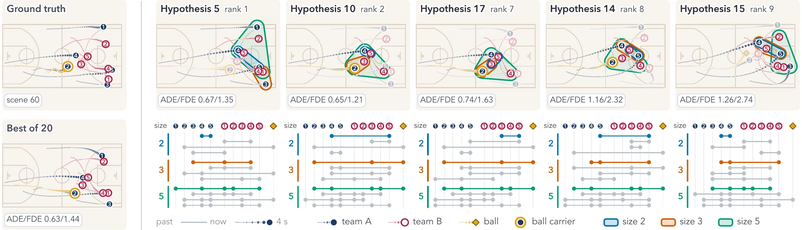

Futures define groups
Each hypothesis groups agents by token similarity and by their distance in its own estimated future, passed on by self-conditioning.
αk,ij = ḡk,i⊤ḡk,j − t · w · δk,ij
Hypothesis-Conditioned Hypergraph Flow Matching for Collective Motion Forecasting
Move along the flow or select a hypothesis to see the groups it forms from its own predicted future.
All 20 hypotheses start from one noise sample and reach their forecasts after 10 Euler steps. Hulls: the most-supported 2–4 s group of each size of the selected hypothesis.
Select a clip to enlarge it.
Hypothesis-conditioned groups: every hypothesis forms the groups of the future it predicts.

Predicting collective motion requires anticipating both where agents will move and which agents will move together. Existing group-aware forecasters infer their interaction structure from the observed motion before generating future hypotheses, even though different futures may involve different groups.
We introduce hypothesis-conditioned groups, in which each predicted future forms its own groups as it is generated. Our framework, H2Flow, integrates this principle into multi-hypothesis flow matching. A scene hypergraph encoder captures higher-order interactions in observed motion, while each hypothesis constructs its own multi-scale hypergraphs from its evolving estimate of the future. These groups guide trajectory generation through group tokens and a group-factorized prediction head, coupling the evolution of motion and interaction structure. To promote collective consistency, a hyperedge-level winner-take-all objective selects a shared winning hypothesis for interacting agents without group annotations.
Experiments on basketball, American football, and soccer datasets demonstrate improved trajectory accuracy and collective forecasting performance. Analyses confirm that each hypothesis forms the groups of its own predicted future and that the gains come from groups formed from the predicted futures and from scoring the hypotheses on them.

Each hypothesis groups agents by token similarity and by their distance in its own estimated future, passed on by self-conditioning.
Agents attend to the group tokens of their hypothesis, and a group-factorized endpoint adds a correction shared by the members of each group.
Each hyperedge selects the hypothesis with the lowest error over its members, without group labels.
4.0 s horizon, K = 20. G3, Team, and Scene match each group (an agent with its two nearest neighbors, a team, or all agents) to its best hypothesis.
| Method | Venue | 1.0 s | 2.0 s | 3.0 s | 4.0 s |
|---|---|---|---|---|---|
| MemoNet | CVPR'22 | 0.38/0.56 | 0.71/1.14 | 1.00/1.57 | 1.25/1.47 |
| NPSN | CVPR'22 | 0.35/0.58 | 0.68/1.23 | 1.01/1.76 | 1.31/1.79 |
| GroupNet | CVPR'22 | 0.21/0.32 | 0.42/0.67 | 0.66/0.98 | 0.89/1.22 |
| MID | CVPR'22 | 0.28/0.37 | 0.51/0.72 | 0.71/0.98 | 0.96/1.27 |
| LED-D | CVPR'23 | 0.21/0.28 | 0.44/0.64 | 0.69/0.95 | 0.94/1.21 |
| LED-I | CVPR'23 | 0.18/0.27 | 0.37/0.56 | 0.58/0.83 | 0.81/1.15 |
| DynGroupNet | NN'24 | 0.19/0.28 | 0.40/0.61 | 0.65/0.90 | 0.89/1.13 |
| MART | ECCV'24 | 0.18/0.26 | 0.36/0.51 | 0.54/0.72 | 0.74/0.92 |
| MoFlow | CVPR'25 | 0.18/0.25 | 0.33/0.46 | 0.51/0.67 | 0.70/0.88 |
| Social-Mamba | ECCV'26 | 0.17/0.25 | 0.34/0.50 | 0.53/0.72 | 0.73/0.92 |
| H²Flow | Ours | 0.17/0.25 | 0.33/0.45 | 0.49/0.64 | 0.67/0.84 |
| Method | ETH | Hotel | Univ | Zara1 | Zara2 | AVG | SDD |
|---|---|---|---|---|---|---|---|
| MID | .39/.66 | .13/.22 | .22/.45 | .17/.30 | .13/.27 | .21/.38 | 9.73/15.32 |
| GroupNet | .46/.73 | .15/.25 | .26/.49 | .21/.39 | .17/.33 | .25/.44 | 9.31/16.11 |
| LED | .39/.58 | .11/.17 | .26/.44 | .18/.26 | .13/.22 | .21/.33 | 8.48/11.66 |
| TUTR | .40/.61 | .11/.18 | .23/.42 | .18/.34 | .13/.25 | .21/.36 | 7.76/12.69 |
| EigenTraj | .36/.53 | .12/.19 | .24/.34 | .19/.33 | .14/.24 | .21/.33 | 8.05/13.25 |
| SingularTraj | .35/.42 | .13/.19 | .25/.44 | .19/.32 | .15/.25 | .21/.32 | 8.40/13.99 |
| MoFlow | .42/.59 | .12/.18 | .23/.40 | .17/.29 | .12/.22 | .21/.34 | 7.68/12.33 |
| Social-Mamba | .43/.79 | .19/.40 | .32/.60 | .18/.29 | .14/.23 | .25/.46 | 8.16/13.46 |
| H²Flow | .44/.64 | .12/.16 | .23/.41 | .16/.29 | .13/.22 | .22/.34 | 7.44/11.92 |
Its best configurations on ETH, Univ, Zara2, and SDD forecast each pedestrian alone, so these benchmarks mainly test the decoder.
On NBA, the 2–4 s groups of a hypothesis overlap most with the groups of its own predicted future, the closest of the 20 at 2.6× chance.
Without the hyperedge-level loss, Scene-min20ADE rises from 1.373 to 1.464 m.


@article{gan2026groups,
title = {Groups Shape Futures, Futures Define Groups: Hypothesis-Conditioned
Hypergraph Flow Matching for Collective Motion Forecasting},
author = {Gan, Rui and Liu, Jiaxi and Li, Zheng and Li, Sixu and Li, Zihao
and Wu, Keshu and Zhou, Yang and Li, Xiaopeng},
journal = {arXiv preprint},
year = {2026}
}